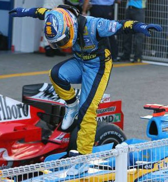
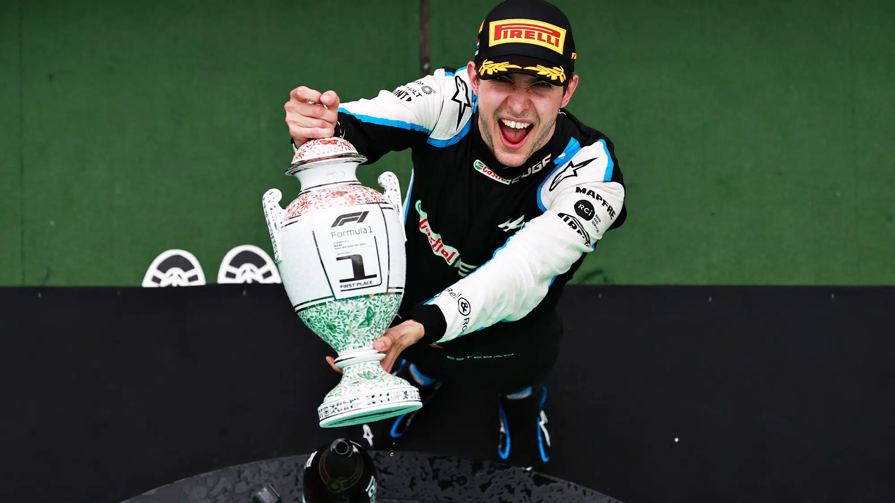

Alpine

The History of Alpine
Alpine F1 Team competes in the FIA Formula One World Championship under the name BWT Alpine F1 Team for sponsorship reasons. The team is based in Enstone, Oxfordshire, England, for chassis design and assembly, and in Viry-Châtillon, France, for engine development.
Previous Names
Initially known as the Benetton Formula team, it was acquired by Renault in 2000 and rebranded as Renault F1 Team. In 2021, the team was rebranded again to Alpine F1 Team to promote Renault's sports car brand, Alpine.

Renault Success
The team's most successful period came in the mid-2000s when it won two consecutive Drivers' Championships in 2005 and 2006 with Fernando Alonso and two Constructors' Championships in 2005 and 2006.
Recent Success
After a period of rebuilding, the team secured a victory at the 2021 Hungarian Grand Prix, marking its first win since 2008. In the 2024 season, Alpine finished sixth in the Constructors' Championship with two podium finishes.
